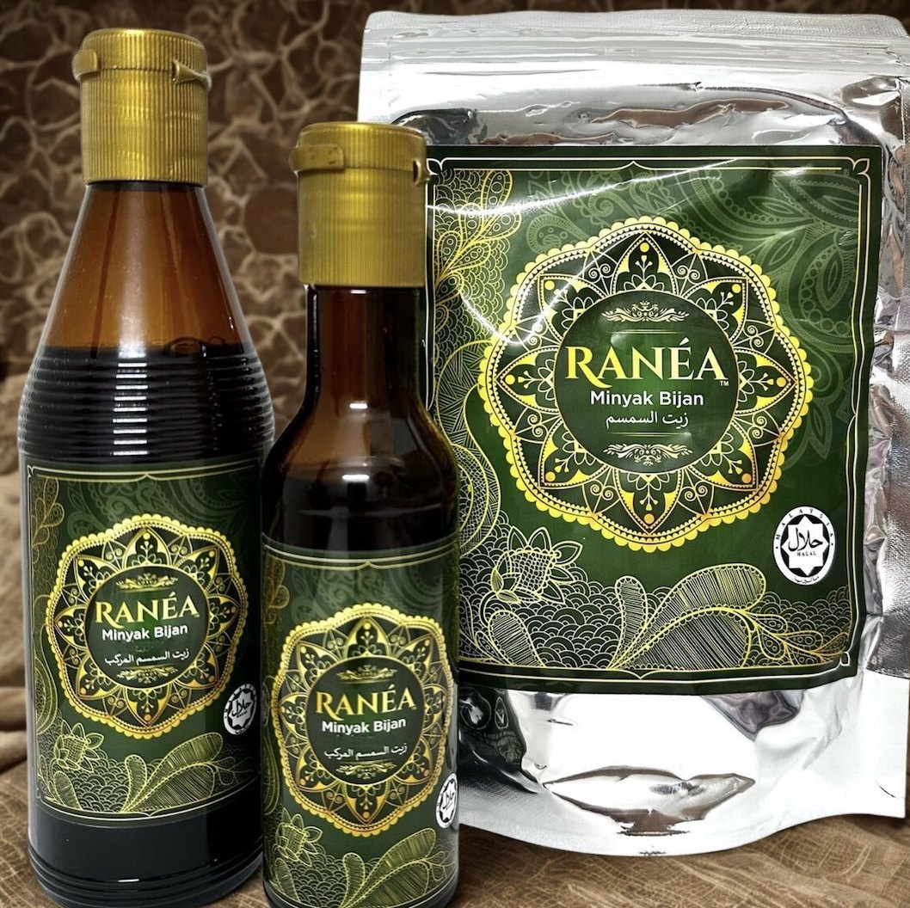

Minyak Bijan Tulen RANÉA
Dihasilkan daripada bijan berkualiti tinggi menggunakan kaedah tradisional bagi mengekalkan rasa asli dan khasiat semula jadi. Sesuai untuk masakan harian, pemakanan sihat, serta penggunaan dalam sektor makanan dan hospitaliti.
- Kaya dengan rasa, aroma semula jadi dan kandungan nutrien
- Dihasilkan secara teliti untuk mengekalkan keaslian dan kualiti tertinggi
- Sesuai untuk kegunaan isi rumah, bakeri, restoran dan industri makanan
- Botol 300 ml
- Botol 140 ml
- Pek sachet 3 ml × 50 unit
Pek sachet sesuai untuk kegunaan sekali hidang, praktikal untuk pelanggan moden dan sektor HORECA. Pembungkusan khas HORECA dan OEM disediakan atas permintaan.